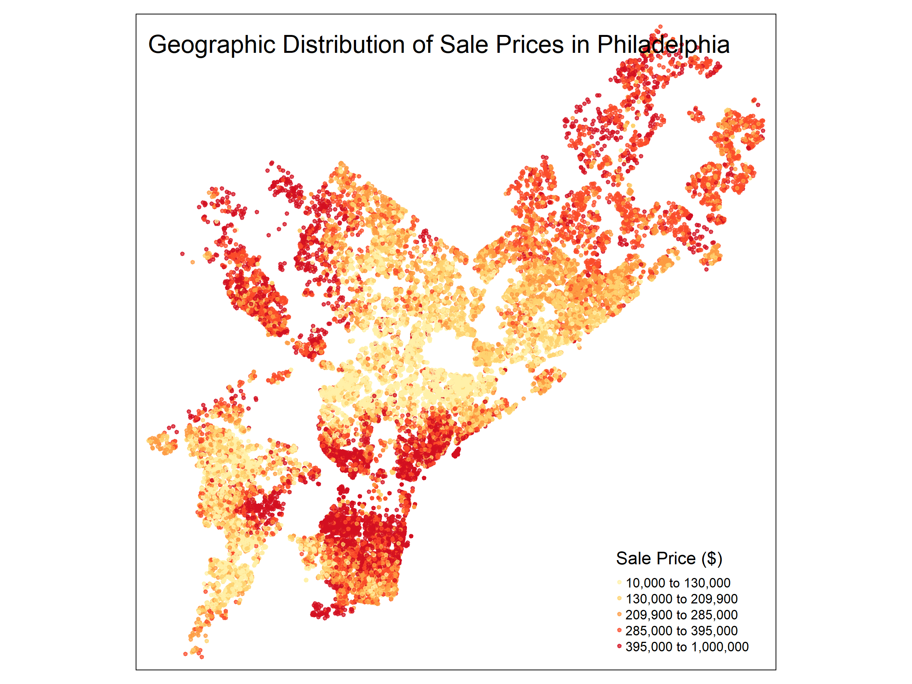
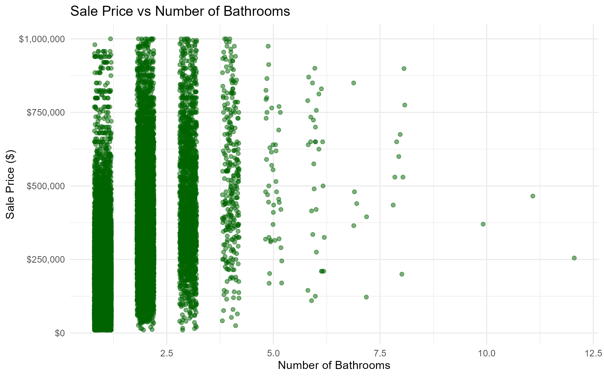
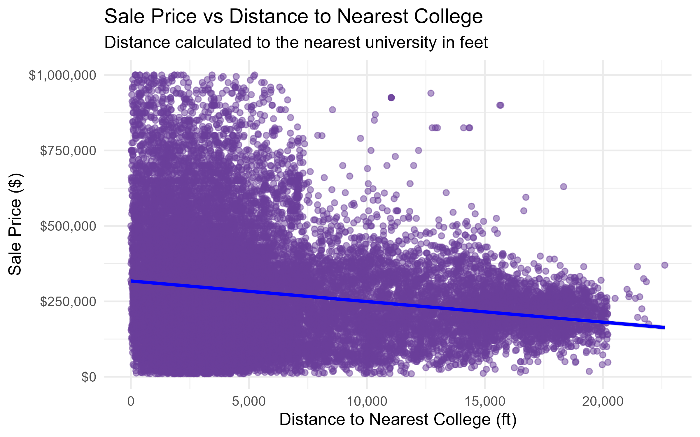

Lab 3
Philadelphia Housing Price Prediction Improving Property Tax Assessments
Choices for data cleaning
Before starting the analysis it is necessary to clean each of the datasets to remove anomalies like houses with no rooms. Although we were looking at residential properties we did not include apartment building as it assigned the sale price of each apartment as the sale price of the building so this was removed. Hence, we are left with homes which mean they will include rooms. We also removed residential locations with sale prices under 10000 or over 1000000 which are very low and high prices and isolated parcel data to data between 2023 and 2024. Census data cleaning involved removing data errors or incomplete fields and adding a column to reflect percentages. The Census data started off with 408 rows and ended with 383 after the cleaning choices. Other data that is also included is university and college locations, crime locations and neighborhood. These are cleaned in a later portion and involve transforming the coordinate reference system so that everything corresponds before filtering and re-categorizing data to help with interpretation
Phase 2: Exploratory Data Analysis

The graph above shows the highest concentration of parcel sale prices is around” $200,000. The histogram is right-skewed which means most sale prices are concentrated on the left side between zero and $375,000. In such a case the mean is generally greater than the median because the tail on the right could inflate the mean. This affects the model’s prediction for lower income homes.
Geographic distribution

Geographic distribution The geographic distribution of sale prices in Philadelphia shows that the most expensive sales were around Center City, North West Philadelphia and North East Philadelphia Airport.The lowest sales are in South and North Philadelphia. There is little transition from areas with a high sale price to areas with a low sale price.
Price vs. structural features

Most places have a total livable area under 3000 sq ft, by 4000 sq ft the number is very sparce. Since the maximum for sale price is capped at $ 1,000,000 there is a hard stop at this point on the y-axis. The most common type of sale was between zero to $500,000 for 0 to 2000 total livable square feet.
 With respect to bathrooms the parcel that is sold the most contains 2 bathrooms and sales for under $812,500.

The parcel that is sold the most contains 2 bathrooms and sales for under $750,000.
Price vs. spatial features
 The Sale Price vs Distance to Nearest College Map shows that as parcels are further from colleges their sale price decreases slightly due to the slight negative slope of the line.
Creative visualization
 Most areas have 2 bedrooms but there are several pockets such as slightly North of Center City and West Philadelphia which have a higher number of bedrooms.
Most areas have 2 bedrooms but there are several pockets such as slightly North of Center City and West Philadelphia which have a higher number of bedrooms.
Phase 3: Feature Engineering
Buffer-based features:
- Violent Crimes within 600ft
k-Nearest Neighbor features:
- Average distance from parcel to 1, 3, and 5 nearest colleges and university buildings. Code written above in order to map feature.
Census variables:
- Join median income, percentage with a bachelor’s degree, and poverty percentage
Interaction terms:
- Wealthy neighborhoods which take into account if a home is in a wealthy neighborhood which is based on median sale price.
Other features:
- log_sale_price, log_livable_area, age and exterior condition (if it is good or not)
Interaction effects

Justification: The features included were engineered to capture social, economic, and environmental factors influencing housing prices. Buffer-based and k nearest-neighbor measures quantify local accessibility and safety. Census data helps to enrich parcels with socio-economic context. Interaction terms account for neighborhood-level wealth which helps contextualize external features of a home, for instance homes in a wealthy neighborhood are more likely to have a higher property value than those in other neighborhood. Applying a binary indicator improves model interpretability and performance for the external condition of a property. The table above includes why each feature was chosen.
Models
Census variables 
Census variables + Spatial features 
Census variables + Spatial features + Interactions and fixed effects 
Model Validation
The model started wiith an RMSE of 0.6076661, R squared of 0.35 and MAE of 0.4539476. This improved gradually with our final values being RMSE 0.4856623, R squared of 0.5850392 and MAE of 0.3442266.
| Structural Only |
0.61 |
0.35 |
| + Census |
0.50 |
0.57 |
| + Spatial |
0.49 |
0.58 |
| + Interactions/FE |
0.48 |
0.59 |
Predicted vs Actual Sales

Which features matter the most: The features which matter the most are wealthy neighborhoods, log of livable areas, percentage with a bachelor’s degree and percentage of poverty. The First three features have a positive effect while the percentage of poverty has a strong inverse effect.
Model Diagnostics
Residual Plot 
Cook’s Distance 
Interpretation of plots
The Residuals vs Fitted plot is around 0 but slightly curved. This means that it could be missing a non-linear term. We tried accounting for this by squaring the age of the home.
The Q-Q Plot shows that the model roughly follows a normal distribution which means using a linear regression makes sense. Ultimately this provides more confidence in our model.
Cooks distance shows many spikes that are the same with a few all ones. A few tall spikes is not concerning as most of them are around the same height but the one on the right side of the graph could indicate a possible outlier that was not accounted for.
Detailed Discussion
The final model explains approximately 59% of the variation in housing prices across Philadelphia, indicating a moderately strong fit. The Mean Absolute Error (MAE) of 0.34 suggests that the model’s predictions are off by about 34%. The RMSE score means that predictions are abou $154,200 off the true sale price. This level of accuracy is reasonable given the complexity and variability of the housing market. The most influential predictors of housing prices include wealthy neighborhoods, log of livable areas, percentage with a bachelor’s degree, all of which have strong positive effects on property values. Conversely, the percentage of poverty and proximity to crime have strong negative relationships with home prices, underscoring how social perceptions of safety influence property values.
Neighborhoods that are the hardest to predict tend to be those undergoing rapid change or instability, particularly areas experiencing gentrification, high prevalence of vacant and distressed properties or smaller sample areas. Examples of this are Nicetown, Fairhill, and Upper Kensington which are all located in North Philadelphia. In fact the top 10 locations which are the most hard to predict are all in North Philadelphia. Areas experiencing gentrification, rising educational attainment and declining crime rates occur alongside persistent vacancy and poverty, leading to non-linear effects that standard models struggle to account for. The rapid transformation in these neighborhoods contributes to greater residual errors. Thus, the model performs best in mid-range markets and is less stable in low-value areas.
From an equity perspective, including socioeconomic indicators such as poverty and education levels improves predictive accuracy but also risks reproducing structural inequalities. By learning from historical patterns of disinvestment, the model may undervalue properties in low-income or historically marginalized neighborhoods. This raises ethical concerns when creating policy based on automated valuation models as it could inadvertently reinforce existing disparities. To mitigate this, residual analysis can be used to test for spatial bias, identifying neighborhoods where the model systematically under- or over-predicts values. Recognizing the limitations within the model highlights opportunities to inform equitable housing policy, such as directing investment initiatives or development funds toward historically undervalued areas rather than further harming them through biased valuation tools. Limitations while creating this model were not cleaning the data in a way that removed abnormalities such as homes that sold for a lot more than those nearby when looking at square footage and not including transportation data which would enrich our understanding of the property’s spatial features.


 Most areas have 2 bedrooms but there are several pockets such as slightly North of Center City and West Philadelphia which have a higher number of bedrooms.
Most areas have 2 bedrooms but there are several pockets such as slightly North of Center City and West Philadelphia which have a higher number of bedrooms.